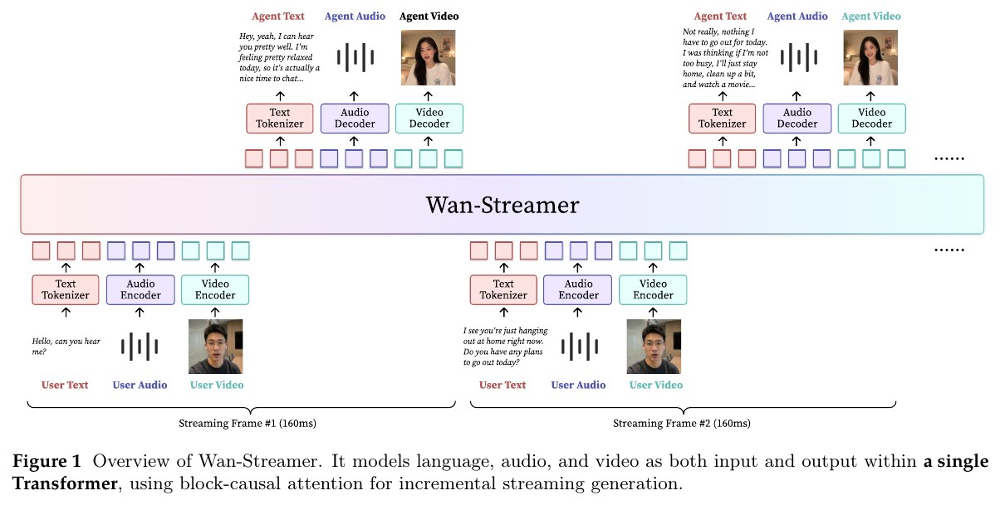
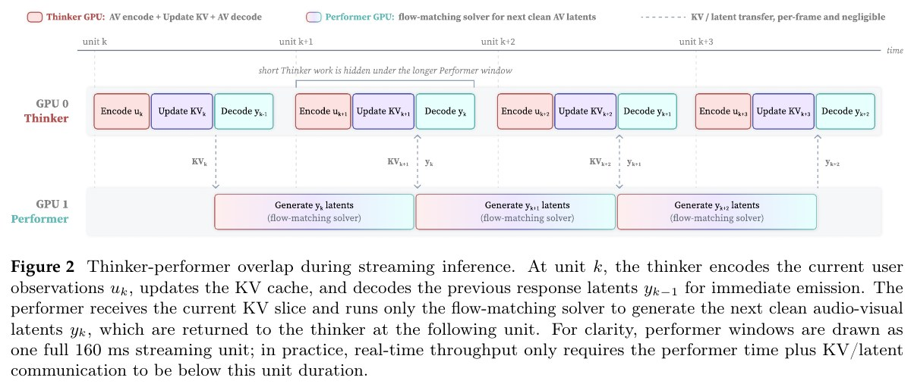

速览
这是一篇偏「系统宣言 + 延迟报告」的短报告：架构与部署讲得清楚，数据、规模、质量指标几乎全空。
thinker + performerGPU 型号原文未披露§2.4 · §3
一句话之外的 5 条
三模态双向进出，一个 Transformer
用户侧文本 / 音频 / 视频 token 与 agent 侧文本 / 音频 / 视频 token 交错成一条因果序列；文本走 next-token CE，音视频走连续 latent 上的条件流匹配§2.1 式 1–3。
全栈「因果化」是前提
严格因果的音频 / 视频 VAE、因果编码器、因果解码器、块因果注意力，生成的干净 latent 直接写回历史，作为下一单元的上下文§1§2.1。
200 ms 来自 thinker-performer 流水
一卡做编码 + KV 更新 + 解码，另一卡只跑流匹配求解；当前帧感知、上一帧解码、下一帧去噪、KV/latent 通信重叠。实时条件：performer 时间 + 通信 < 160 ms§2.4 · 图 2。
蒸馏同时解决速度和长程漂移
把带 CFG、多步求解的 teacher 蒸进少步 student；再用 rolling distillation（self-forcing + 分布匹配）在自己生成的历史上训练，缓解长时退化§2.3。
没有任何质量指标
评测只有两张延迟 / 运行时对照表（多为第三方公开数字，测量边界不一）；理解、生成、唇同步、打断都只有定性描述，无消融§3 · 表 1–2。
架构：一条交错的因果流
相对级联式实时对话 / 数字人系统，核心改动是把「感知 → 推理 → 说话 → 画面」压进同一个模型状态里。

建模目标
第 k 个流式单元，用户观测 u_k=(u^t,u^a,u^v)，agent 响应 y_k=(y^t,y^a,y^v)。模型按完整因果历史预测当前响应：p(y_k | u_≤k, y_<k)，K 个单元连乘式 1。
- 文本：离散 token，next-token 交叉熵§2.1。
- 音频 / 视频：连续 latent，条件流匹配。线性插值
z_τ=(1−τ)z_0+τε，回归速度ε−z_0式 2；同一个干净上下文c_k同时条件化音频和视频的速度预测，「语音、动作、外观、场景演化」作为耦合响应联合优化式 3 · §2.1。 - 写回：去噪得到的干净 latent 直接追加进历史，供后续单元使用；同时由因果解码器渲染成外部音视频§2.1。
相对级联系统改了什么
| 环节 | 典型级联 / 数字人系统 | Wan-Streamer |
|---|---|---|
| 轮次与打断 | VAD + 规则式 turn-taking | 从交错交互数据中学习何时继续、停顿、重叠、打断、让出、恢复§3 |
| 中间表示 | 文本常作为模块间隐藏中间层§1 | 共享 KV 状态；音视频在解码前就已耦合§1 |
| 音画同步 | 音频驱动渲染 / 后对齐 | 语音与视频 latent 由同一因果上下文预测，唇动与韵律原生同步§3 Naturalness |
| 编解码器 | 离线编码器、双向视频解码器 | 严格因果的音频 / 视频 VAE 与因果编解码器§1 |
| 听的时候 | 常为静止或循环动画 | 持续生成凝视、点头、微表情、姿态变化§3 |

推理流水的逐步细节§2.4
- 系统 prefill 后，thinker 把初始 KV cache 广播给 performer，双方共享同一份完整历史。
- 第 k 步：thinker 处理当前用户音视频 → 因果编码 → 在语言与状态槽位上做 token 因果解码，得到当前 KV 切片。
- 同一通信边界：thinker 收到 performer 上一步产出的干净 latent，并把新 KV 切片发过去。
- thinker 解码回传的 latent 并立即输出；performer 把 KV 切片拼进自己的完整历史，只为下一单元跑求解器，结果留在本地，下一步再回传。
- 吞吐由 performer 墙钟决定；吞吐条件 ≠ 响应延迟：后者 = 编码 + thinker 状态更新 + performer 生成 + 解码，当前约 200 ms§2.4。另用 CUDA graph、编译、优化 kernel 提速。
数据：只给了类目清单
§2.2 全文一段，列出三大块数据的任务类型；规模、来源、清洗、caption、配比全部没有。所以这里不画任何比例条。
| 数据块 | 原文列出的任务类型 | 作用（原文表述） | 规模 | 配比 |
|---|---|---|---|---|
| 理解向 | 图像 / 音频 / 视频理解、文本对话、ASR、TTS、音频对话及相关语言-音频-视觉监督 | 把流式多模态观测转成共享因果上下文；在多模态输入下保住对话能力 | 未披露 | 未披露 |
| 生成向 | 图像生成、音频生成、视频生成、联合音视频生成；单模态与跨模态条件都有 | 在因果音视频 latent 空间上学生成 | 未披露 | 未披露 |
| 端到端双工交互 | 输入侧、输出侧都可出现文本 / 音频 / 视频的双工交互数据 | 让模型接触「同时感知与表达」的目标设定 | 未披露 | 未披露 |
来源：§2.2；第三块在第二阶段单独使用（§2.3）。
能从正文推出的数据性质 §2.3 · §3
- 交互数据把用户与 agent 的三模态放在同一时间轴上，模型由此看到人类何时继续、停顿、重叠、打断、让出、恢复§3。
- 打断、主动开口（看到显著视觉事件时发起评论或提问）均声明为从数据学到，而非手写规则§3。
- 第一阶段理解与生成任务混合训练，而不是分模块各训各的§2.3。
原文没有回答的问题 未披露
- 双工交互数据从哪来：真人录制、合成拼接，还是由级联系统生成？
- agent 侧视频是同一身份还是多身份；身份 / 场景如何筛选。
- 音视频清洗、唇同步过滤、质量打分；文本 caption 或转写如何得到。
- 各任务的 token / 小时数与采样配比；有无安全过滤。
训练配方：三阶段
学习率、步数、batch、token 量、求解步数、硬件全部未给。下面只列原文写明的目标与手段。
独立任务预训练
- 统一 Transformer 从语言模型初始化[42,43]
- 理解侧：因果音视频编码器与 Transformer 联训，目标是理解指标「接近专用多模态理解模型」、对话能力与同规模轮次式对话模型相当
- 生成侧：同一 Transformer 在因果音视频 latent 上训图像 / 音频 / 视频 / 联合音视频生成
- 理解与生成任务混合
端到端交互训练
- 双工数据：用户三模态输入与 agent 三模态输出交错在同一条因果流
- 训练格式 = 推理格式：从当前观测更新状态 → 生成同步的文本 / 音频 / 视频 → 干净 latent 写回历史
- 由此学响应时机、主动倾听、打断处理、长上下文一致性
低延迟流式蒸馏
- teacher：带 CFG、更多流匹配求解步 → student：吸收 CFG、减少求解步，保住音视频质量
- rolling distillation：student 在连续单元上 rollout，用自己生成的历史训练
- self-forcing[17] + 分布匹配[45,46]，在真实 rollout 条件下对齐 teacher 轨迹，缓解训练-测试失配与长时退化
后训练 / RL 无
原文没有 SFT 之外的偏好对齐或 RL 阶段描述；第三阶段的分布匹配蒸馏是唯一的「对齐 teacher 分布」手段。CFG 尺度、teacher/student 求解步数、蒸馏数据量均 原文未披露。
评测：只比延迟，且要按「测量边界」读
表 1 / 表 2 的对比对象数字大多来自厂商博客、产品页或各自论文，并非作者在同一硬件、同一协议下复测；作者自己也强调不要按最小数字排名§3。
表 1 精选：语音 / 全模态实时系统
| 系统 | 交互形态 | 用户可见响应 | 其他报告指标 | 比较边界 |
|---|---|---|---|---|
| Doubao Realtime Voice | 语音→语音 | ∼1 s 整体 | ∼700 ms 裸模型 | 官方产品数字；无视觉输出 |
| Seeduplex | 语音→语音 | N/R | 端点 −250 ms，打断 −300 ms（相对旧版 Doubao） | 相对改进；纯语音 |
| GPT-4o / Realtime API | 语音→语音，音频/视觉输入 | 依协议而定 | 232/320 ms 官方音频响应；∼500 ms API TTFB；∼800 ms 目标 voice-to-voice | 混合了模型、TTFB、端点、网络 |
| Hume EVI 3 | 语音→语音 | 0.9–1.4 s（web app） | 模型响应 <300 ms | 厂商基准；无视觉输出 |
| Gemini Live API | 语音→语音 | 1.2–3.6 s（API） | N/R | 厂商基准，非官方拆解 |
| Sesame web app | 语音→语音 | 0.8–1.2 s（web app） | N/R | 厂商基准；纯语音 |
| Moshi | 语音→语音 | N/R | 理论 160 ms；实际 200 ms 模型延迟 | 原生全双工语音；无视觉 |
| Qwen3/3.5-Omni | 音视频文本入，语音/文本出 | N/R | 首包 234/547 ms；3.5 Flash 235/426 ms，Plus 435/651 ms | 首包指标；无同步视觉 avatar |
| MiniCPM-o 4.5 | 音视频入，语音/文本出 | N/R | 首 token 0.58 s；RTF 0.20–0.27 | 首 token / RTF；无视觉 avatar |
| Wan-Streamer | 文本/音频/视频 入&出 | ∼550 ms（含 350 ms 网络） | ∼200 ms 模型侧；25 FPS 视频 | 单一端到端模型 |
记号：N/R = 未公开对齐口径的绝对响应延迟；∼ = 约值；高亮行为论文自身（原文阴影行）。数字后的参考文献号已省略，见原文表 1。来源：表 1。
表 2：视觉 agent / 流式 avatar / 音视频生成器的运行时组件级指标，不是对齐的响应延迟
| 系统 | 视觉交互范围 | 报告的运行时 | 与 Wan-Streamer 的主要差别 |
|---|---|---|---|
| 全链路 / 交互式数字人 | |||
| Body of Her | 端到端人形 agent | 24 FPS 下 42 ms 内出下一帧 | 初步研究；无部署的信号到信号延迟 |
| MIDAS | 多模态数字人视频合成 | 实时逐帧生成 | 未给绝对响应延迟 |
| U-Mind | 文本/语音/动作/视频交互环 | 声称实时渲染 | 文本优先流水线；延迟拆解未公开 |
| X-Streamer | 从肖像开放式视频聊天 | 两张 A100 上 25 FPS | 未给绝对响应延迟 |
| LPM 1.0 | 在线角色表演引擎 | 低延迟实时因果流式 | 耦合外部 A2A 系统，延迟非 LPM 自身 |
| MAViD | 音视频对话框架 | 无绝对延迟 | 模块化；适合比能力，不适合比延迟 |
| M.I.O | 交互式 omni-avatar | 讨论了有界延迟设计 | 多模块；无公开信号到信号数字 |
| Avatar 渲染 / 联合音视频生成组件 | |||
| VASA-1 | 音频驱动说话人脸 | 40 FPS，170 ms 前置延迟 | 仅渲染器；无对话推理、无用户视觉感知 |
| TalkingMachines | FaceTime 式音频驱动视频 | 按 TTBC 实时分块生成 | 依赖外部音频 LLM |
| StreamAvatar | 流式说/听 avatar | FFD 0.33–0.39 s；视频延迟 ∼1.20 s | 语音驱动渲染器；无统一对话模型 |
| Avatar Forcing (Ki et al.) | 交互式头部 avatar 反应 | ∼500 ms 反应延迟；6.8× 加速 | 对用户音频/动作反应，但不生成对话语音 |
| AvatarForcing (Cui et al.) | 单步流式说话 avatar | 34 ms/帧；0.51 s 音频到视觉延迟 | 视觉流式指标强，非感知式对话 |
| LiveTalk | 多模态交互 avatar 视频 | 24.82 FPS；首帧 0.33 s | 用 Qwen3-Omni 做语音推理，视频延迟另算 |
| Hallo-Live | 文本驱动联合音视频 avatar | 20.38 FPS，0.94 s 延迟 | 文本驱动；不持续感知用户音视频 |
| OmniForcing | 文本到音视频流式生成 | TTFC ∼0.7 s；∼25 FPS | 首块生成延迟，非用户响应延迟 |
| Wan-Streamer | 感知式对话 + 同步语音与视频 | 25 FPS；∼550 ms 总；∼200 ms 模型侧 | 单一因果 Transformer 联合学习全部行为 |
缩写按原文保留：FFD = 首帧延迟，TTBC、TTFC 为各原论文的首块类指标。来源：表 2。
定性能力（无指标） §3
- 空闲：不塌缩成静止肖像，保持身份、凝视、姿态、呼吸与细微面部运动。
- 倾听：随用户语音与视觉线索产生凝视转移、点头、微表情、姿态变化。
- 打断与主动开口：生成时仍消费用户音视频，可停止 / 缩短 / 改向；看到显著视觉事件可主动评论或提问。
上述均为文字描述，未给出用户研究、唇同步分数、打断成功率或任何理解 / 生成基准数字。
新在哪
CUDA graph、编译、kernel 优化属于常规工程，不列入。
文本 / 音频 / 视频在输入和输出两侧对称出现
与「感知音视频但只回语音」的 omni 模型、或「渲染 avatar 但对话靠外部 LLM」的数字人都不同：同一个 Transformer 同时预测 agent 的文本 token 与音视频 latent§1 · 表 1–2。
可核对：表 1 / 表 2 的「比较边界」列逐个标出了对比系统缺哪一环。
离散 NTP + 连续流匹配共用一条因果历史，干净 latent 回写
音视频共享同一上下文 c_k 联合去噪，去噪结果作为干净上下文进入后续单元，使唇动 / 韵律在解码前就耦合式 1–3。
相近思路在 diffusion forcing / self-forcing 类视频工作中出现过（原文引 [7,17]），新意在于把语言和双向交互也放进同一序列。
单模型、双卡的 thinker-performer 拆分
不是两个模型级联，而是同一模型按算子拆分：thinker 管编码 / 文本 / KV / 解码，performer 只跑求解器，二者靠 KV 切片与 latent 交换保持同一状态§2.4 · 图 2。
延迟报告按「测量边界」分列
把模型侧、首包、首 token、API TTFB、组件 FPS 分开列，并加「覆盖范围」列，而不是只报一个最小数字表 1–2。
对图像编辑数据、评测与 caption 的启示
Wan-Streamer 不是编辑模型，数据部分也几乎没披露；以下从它的训练格式、蒸馏和评测写法里提炼。每条绿底框都是迁移建议，不是论文内容。
D1最后一段数据要与部署格式一模一样
论文：第一阶段混合理解与生成任务；第二阶段只用「与推理同一因果格式」的双工交互数据，让响应时机、打断等在推理格式下学到§2.3。
迁移建议，不是论文内容：编辑模型的末段训练数据按线上真实调用格式组织（多轮连续编辑链、带上一轮输出作为输入、真实指令长度分布），而不是只用单轮 (src, instr, tgt) 三元组。
D2在模型自己的输出上继续训练，压住多轮漂移
论文：rolling distillation 让 student 在连续单元上 rollout，以自己生成的历史为条件，用 self-forcing + 分布匹配对齐 teacher，减少训练-测试失配和长时退化§2.3。
迁移建议，不是论文内容：多轮编辑数据里，第 2 轮以后的输入用模型自己第 1 轮的输出（而非干净 GT）构造，并专门统计第 N 轮的身份 / 画质衰减，作为数据配比的调节信号。
D3「不动的时候」也要有监督
论文：强调空闲 / 倾听状态下不塌缩成静止肖像，持续保持身份、凝视、呼吸等§3；这类行为来自交互数据，而非规则§3。
迁移建议，不是论文内容：编辑数据里显式放入「指令只改局部、其余必须保真」以及「无需修改」的负样本，让保持区域有直接监督，而不是只靠损失隐式学。
E1对比表加「测量边界 / 覆盖范围」列
论文：表 1 单列「比较边界」，表 2 单列「视觉交互范围」与「主要差别」，明确哪些数字是模型侧、首包、API TTFB 或组件 FPS表 1–2 · §3。
迁移建议，不是论文内容：编辑横评表固定加一列，写明对手结果是否含 prompt 改写 / VLM 规划、是否用 mask、是 API 还是本地权重、分辨率与种子数；不同口径的分数分组展示，不混排。
E2吞吐与延迟分开报
论文：明确「吞吐条件（performer 时间 + 通信 < 160 ms）」与「信号到信号响应延迟（≈200 ms）」是两回事§2.4。
迁移建议，不是论文内容：编辑服务评测同时记录单张端到端延迟（含编码 / 改写 / 解码）和批量吞吐，并写清起止点；蒸馏前后都测。
E3蒸馏掉 CFG 后，要单独复测保真类指标
论文：第三阶段把带 CFG、多步求解的 teacher 蒸进少步 student，宣称「保住音视频质量」，但未给 teacher 与 student 的任何对比数字§2.3。
迁移建议，不是论文内容：编辑模型做 CFG / 步数蒸馏时，把 teacher vs student 的指令遵循、非编辑区保真、身份一致性做成固定回归表——这正是本文缺的那张表。
C1警惕「文本当隐藏中间层」带来的误差累积
论文：批评级联系统常把文本作为模块间隐藏表示，造成边界等待、识别与同步误差累积§1；它的 caption / 转写如何获得 原文未披露。
迁移建议，不是论文内容：若编辑流水线是「VLM 生成 caption / 改写指令 → 生成模型」，单独评估改写那一跳的错误率（漏改、多改、属性错），并保留一组不经改写、直接用原指令的对照。
C2同一上下文条件化多个耦合输出
论文：同一干净上下文同时条件化音频与视频的速度预测，使二者作为耦合响应联合优化式 3 · §2.1。
迁移建议，不是论文内容：构造编辑数据时，把「编辑后图像」与「编辑区域描述 / 变化 caption」作为同一样本的配套目标一起产出和校验，避免 caption 与图像各自生成后再对齐导致不一致。
局限与存疑
- 零质量指标。理解侧称「接近专用多模态理解模型」、对话「与同规模轮次式模型相当」§2.3，但无任何基准分数；生成质量、唇同步、打断成功率、用户研究均缺。
- 数据完全不透明。只列任务类型§2.2，无来源、规模、清洗、caption 方式、配比；双工交互数据怎么来的是复现的最大缺口。
- 无消融。块因果 vs 其他注意力、因果 VAE 的代价、rolling distillation 的增益、thinker-performer 带来的延迟收益都没有对照实验。
- 延迟对比不可严格比较。表 1–2 对手数字来自博客 / 产品页 / 各自论文，测量边界不同，作者亦承认§3；Wan-Streamer 的 550 ms 是 200 ms 加上假设的 350 ms 网络预算，不是实测远程用户延迟。
- 关键规格缺失。参数量、初始化 LM 的具体型号与尺寸（只引用 Qwen3 / Qwen2.5 报告[42,43]）、GPU 型号、求解步数、CFG 尺度均未披露；延迟数字无法在其他硬件上外推。
- 分辨率很低。v0.1 仅在 192p 验证§5；「扩展到更高分辨率是直接的」只是断言，无实验支撑，而分辨率直接影响 performer 能否守住 160 ms。
- 开源与许可证未说明。只给项目网站，正文无权重、代码或许可证信息。
图表索引
| 编号 | 内容 | 本页位置 |
|---|---|---|
| 首页裁图 | 摘要区截图（文字，非示意图）；文件 figures/fig0-teaser.jpg，本页未嵌入 | — |
| 图 1 | Wan-Streamer 总览：三模态双向进出单一 Transformer，160 ms 流式帧（p.2） | 03 架构 |
| 图 2 | Thinker-performer 流式推理重叠时序（p.5） | 03 架构 |
| 式 1–3 | 因果分解、流匹配插值、音视频速度回归损失（§2.1） | 03 架构 |
| 表 1 | 语音 / 全模态实时系统响应延迟对比（p.6） | 06 评测 |
| 表 2 | 视觉 agent / 流式 avatar / 音视频生成器运行时对比（p.7） | 06 评测 |
| 示意图 ×1、图表 ×2 | 组件关系示意、延迟构成条、用户可见响应区间图：本页根据正文与表 1 绘制 | 03 · 06 |